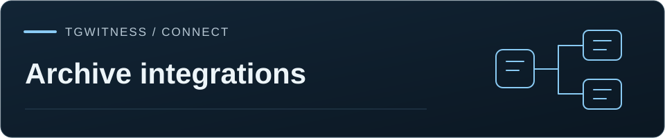

Tham khảo / Lưu trữ & tích hợp
Dòng lệnh
Tìm kiếm, đọc bối cảnh, đếm hoạt động và xuất các tin nhắn đã lưu từ các skript và tác nhân, với đầu ra --json, mã thoát ổn định và các token chỉ đọc có phạm vi giới hạn.

MCP chỉ đọc · Tìm kiếm toàn văn · Wiki
Xem trước. tgwitness search, context, messages, stats và export đọc
các quan sát đã lưu cho các tập lệnh và tác nhân AI. Chúng không thể gửi bất cứ thứ gì đến
Telegram, thay đổi cài đặt hoặc sửa đổi nhật ký được ký điện tử.
Với --json, stdout chứa chính xác một tài liệu JSON (export viết dưới dạng JSON Lines).
Tiến trình, gợi ý và lỗi được gửi đến stderr. Mã thoát là ổn định:
| Mã nguồn | Ý nghĩa |
|---|---|
0 |
Thành công, bao gồm cả kết quả trống |
1 |
Lỗi: không thể truy cập bảng điều khiển, dữ liệu không thể đọc được, quá trình xuất bị gián đoạn |
2 |
Lỗi sử dụng hoặc yêu cầu không hợp lệ: ngày tháng không đúng, tùy chọn không xác định, chỉ mục tìm kiếm bị tắt |
3 |
Hiện không khả dụng: không gian làm việc đang được mở trong một bảng điều khiển đang chạy, hoặc bảng điều khiển yêu cầu thử lại sau (giới hạn tốc độ, hết thời gian chờ) |
4 |
Truy cập bị từ chối: mã thông báo thiếu, đã hết hạn hoặc bị thu hồi, cuộc trò chuyện nằm ngoài phạm vi cho phép, hoặc công cụ không hỗ trợ |
Hai cách để đọc#
Thông qua bảng điều khiển (--url). Lệnh này sử dụng cùng API lưu trữ có phạm vi giới hạn như
MCP. Tạo kết nối trong phần Tích hợp → MCP: chọn không gian làm việc và các cuộc trò chuyện,
công cụ và thời hạn hiệu lực, sau đó sao chép mã thông báo một lần. Kết nối này chỉ cho phép đọc, giới hạn
trong các cuộc trò chuyện đó, bị giới hạn tốc độ ở 60 yêu cầu mỗi phút và có thể bị thu hồi hoặc
đổi mới bất cứ lúc nào. Mã thông báo đăng nhập bảng điều khiển và thông tin đăng nhập Telegram không hoạt động ở đây.
export TGWITNESS_URL=https://panel.example.org # default http://127.0.0.1:8787
export TGWITNESS_MCP_TOKEN=tgw_mcp_... # or --token-file path
tgwitness search 'перевод карта' --jsonBảng điều khiển từ xa cần sử dụng HTTPS; HTTP thuần túy chỉ được chấp nhận cho 127.0.0.1,
localhost và ::1. Các biến môi trường proxy sẽ bị bỏ qua và các chuyển hướng sẽ bị
từ chối, do đó mã thông báo chỉ đến được địa chỉ mà bạn cung cấp.
Trực tiếp từ một không gian làm việc đã dừng (--data-dir). Đọc thư mục dữ liệu với
quyền truy cập cục bộ đầy đủ, không cần mã thông báo. Sử dụng trên bản sao của thư mục dữ liệu hoặc khi
quá trình thu thập dữ liệu đã dừng. Các bản ghi được ký số không bao giờ bị thay đổi; giống như bảng điều khiển, việc mở một
không gian làm việc có thể cập nhật các chỉ mục được tạo ra từ đó. Khi bảng điều khiển đang mở không gian làm việc, lệnh sẽ thoát với
mã 3; hãy đọc thông qua bảng điều khiển thay thế. Nếu không có --data-dir, TGWITNESS_DATA,
./data/live hoặc thư mục dữ liệu của bản cài đặt đang chạy lệnh sẽ được sử dụng.
--workspace ID chọn một không gian làm việc (mặc định default). tgwitness messages
--workspaces hiển thị danh sách các không gian làm việc mà bạn có quyền truy cập.
Lệnh#
| Lệnh | Kết quả |
|---|---|
tgwitness search QUERY [--chat ID] [--since] [--until] [--any] [--limit N] [--offset N] |
Hiển thị kết quả phù hợp nhất trước tiên, bao gồm các dạng từ, cụm từ chính xác trong dấu ngoặc kép, tên miền và @username (cú pháp) |
tgwitness search QUERY --exact [--before SEQ] |
Văn bản chính xác, mới nhất trước, không bao gồm chỉ mục |
tgwitness context CHAT_ID MESSAGE_ID |
Các tin nhắn được lưu trữ trong phạm vi mười ID tin nhắn ở cả hai phía |
tgwitness messages |
Các cuộc trò chuyện bạn có thể đọc |
tgwitness messages CHAT_ID [--since] [--until] [--before SEQ] |
Các tin nhắn đã lưu trong cuộc trò chuyện, sắp xếp theo thứ tự từ mới nhất đến cũ nhất |
tgwitness messages CHAT_ID --message ID |
Mọi phiên bản đã lưu và bản ghi xóa của một tin nhắn |
tgwitness stats [--chat ID] [--sender ID] [--since] [--until] [--top N] |
Thống kê hoạt động, như sau |
tgwitness export [--chat ID] [--since] [--until] [--output FILE] |
Các quan sát được lưu dưới dạng JSON Lines theo thứ tự trong nhật ký |
Ngày tháng được tính theo 2026-10-01 (nửa đêm theo giờ UTC) hoặc theo định dạng giờ ISO kèm múi giờ,
2026-10-01T09:00+03:00. Đối với search, messages và export họ chọn
thời gian quan sát. Các trang chứa tối đa 50 bản ghi: làm theo next_offset (--offset) để
tìm kiếm theo thứ hạng và next_before (--before) ở nơi khác.
Tìm kiếm theo thứ hạng dừng lại ở 1,000 kết quả. Trang cuối cùng có thể ngắn hơn --limit; hãy thu hẹp phạm vi truy vấn, cuộc trò chuyện hoặc khoảng thời gian khi có nhiều quan sát phù hợp hơn.
Mỗi kết quả tin nhắn đều chứa untrusted_content: trueID không gian làm việc, ID cuộc trò chuyện và
ID tin nhắn, số thứ tự trong nhật ký, mã băm của bản ghi đã lưu và liên kết đến bảng điều khiển. Các thao tác chỉnh sửa,
thông báo xóa và missing_on_recheck đều là các bản ghi riêng biệt. Việc thiếu một bản ghi
không chứng minh rằng sự kiện đó chưa từng xảy ra.
Thống kê hoạt động#
stats đếm số quan sát đã lưu cho một cuộc trò chuyện, một người gửi hoặc tất cả các cuộc trò chuyện trong phạm vi:
- các tin nhắn theo giờ UTC và theo ngày trong tuần (bắt đầu từ thứ Hai), các khung giờ và ngày có lưu lượng cao nhất;
- đã chỉnh sửa, đã xóa và
missing_on_recheckchia sẻ; - người gửi kèm theo số lượng tin nhắn và thời gian gửi tin nhắn đầu tiên và cuối cùng;
- các tên miền xuất hiện thường xuyên nhất và
@handles, được tính một lần cho mỗi tin nhắn trên các phiên bản đã lưu của nó; - phạm vi:
coverage.gapcác bản ghi và, để truy cập toàn bộ không gian làm việc, các khoảng thời gian không có tín hiệu kiểm tra trạng thái từ bộ thu thập (collector_liveness).
Khoảng thời gian này chọn thời gian tin nhắn được Telegram báo cáo. Số giờ và số ngày trong tuần có thể
giúp ước tính múi giờ của người gửi; chúng không xác định chính xác múi giờ đó. Các số liệu được tính toán theo
yêu cầu từ nhật ký và không được lưu trữ. Mỗi kết quả nêu tên tiêu đề nhật ký mà nó
bao phủ khi quyền truy cập của bạn bao trùm toàn bộ không gian làm việc. Việc đọc sẽ dừng lại sau năm giây khi
truy cập qua bảng điều khiển, hoặc --timeout giây trên máy cục bộ (mặc định là 30); sau đó complete là false và
partial chỉ ra bản ghi đầu tiên chưa được đọc. Chỉ các bản ghi mới nhất mới được
tính trong trường hợp đó.
Xuất#
export Ghi một đối tượng JSON cho mỗi quan sát được lưu (tin nhắn mới, ảnh chụp màn hình,
sửa đổi, tin nhắn khôi phục, thông báo xóa, missing_on_recheck và các bản ghi phương tiện
được lưu) theo thứ tự trong nhật ký. Mỗi dòng có các trường giống như các kết quả khác, kèm theo
toàn văn. Với --output, tệp được ghi dưới một .partial tên và
chỉ được đổi tên sau khi bản ghi hoàn tất của bảng điều khiển; việc xuất bị gián đoạn sẽ không để lại
tệp nào và thoát với mã 1. --output không bao giờ ghi đè lên tệp hiện có. Với
--output và --json, stdout hiển thị một bản tóm tắt: số lượng bản ghi,
chuỗi nhật ký cuối cùng và, đối với quyền truy cập toàn bộ không gian làm việc, đầu nhật ký.
Việc xuất dữ liệu qua bảng điều khiển yêu cầu kết nối cho phép xuất tin nhắn
(chỉ qua dòng lệnh); tùy chọn này không được chọn mặc định. Tệp này là bản sao làm việc, không phải bằng chứng: để có bản chuyển giao có thể xác minh
, hãy sử dụng bản xuất có chữ ký trong phần "Exports", phần này python -m tgwitness.verifykiểm tra.
Bảng điều khiển sẽ kiểm tra lại quyền truy cập trước khi xuất mỗi bản ghi, bao gồm cả bản ghi hoàn tất. Quyền truy cập bị thu hồi hoặc hết hạn sẽ dẫn đến việc xuất dữ liệu không đầy đủ. Các lần đọc trang theo cơ chế lười biếng chia sẻ giới hạn công việc lưu trữ với các truy vấn khác và có thời gian chờ giới hạn.
Kỹ năng của Agent#
.agents/skills/tgwitness-cli/SKILL.md
hướng dẫn người dùng cách sử dụng các lệnh này, cách trích dẫn các bản ghi và cách xử lý
văn bản đã thu thập. Người dùng tải .agents/skills tải nó từ bản checkout của kho lưu trữ
. Đối với Claude Code, hãy sao chép tgwitness-cli thư mục này vào .claude/skills/ trong
dự án của bạn hoặc ~/.claude/skills/.
MCP và dòng lệnh#
Cả hai đều sử dụng cùng các kết nối, kiểm tra phạm vi và giới hạn. Kết quả MCP bị giới hạn trong
một trang 64 KiB, do đó MCP không hỗ trợ xuất dữ liệu hàng loạt; dòng lệnh sẽ truyền dữ liệu theo luồng.
get_activity_stats có sẵn cho cả hai.